Terra Station mobile#
Complete this tutorial to get started with the Terra Station mobile app.
Download the Terra Station app#
Tap the download link for your operating system. Your device’s app store will open.
Install the Terra Station app on your phone.
Create a new wallet#
Launch the Terra Station app and select New wallet
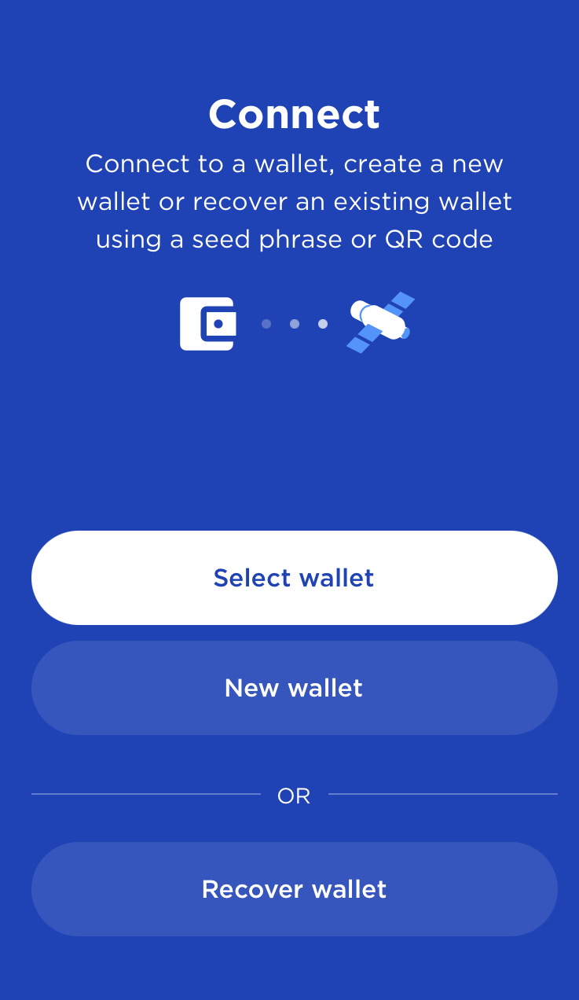Enter a name for your wallet and a secure password. Confirm your password and tap Next
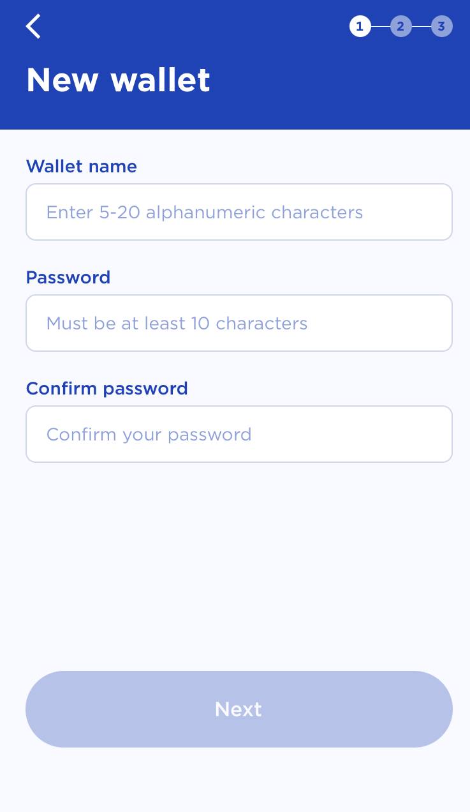Using a pen and paper, write down your 24-word seed phrase exactly as it appears. Number each word to make verifying easier.
Protect your seed phrase
Anyone with your seed phrase can access your money, and there is no recourse for someone stealing your seed phrase. To protect your seed phrase, consider the following tips:
Never save or store your seed phrase as a digital file on any device.
Always write down your seed phrase with a pen and paper.
Store the paper with your seed phrase on it somewhere safe.
Never give your seed phrase to anyone, not even support staff.
Verify your writing to make sure every word is spelled correctly and in the right order. If you numbered your phrase, it can be helpful to verify it backward.
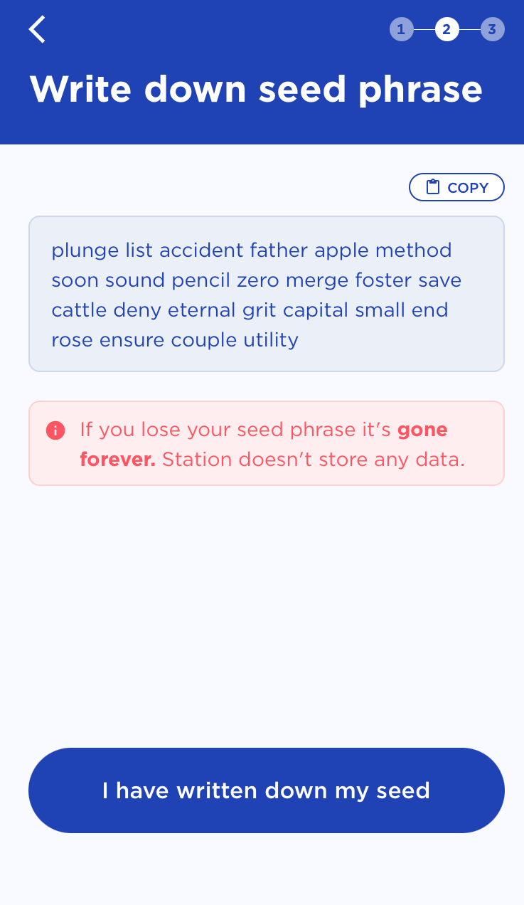Tap I have written down my seed.
Confirm your seed phrase by typing or selecting the correct words in each prompt.
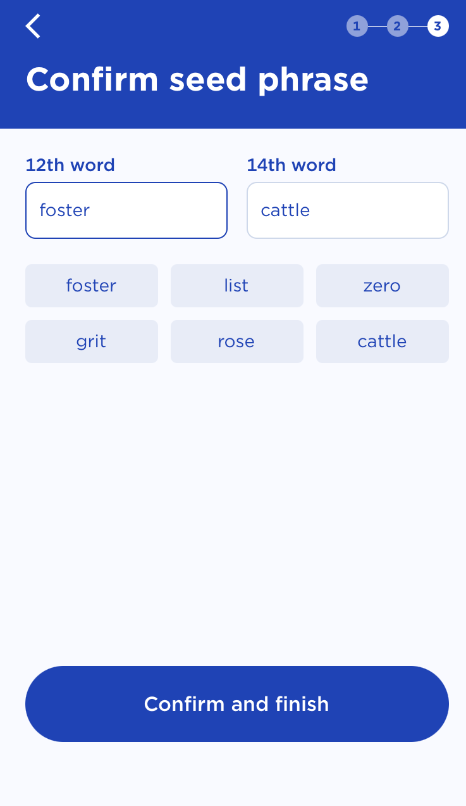Tap Confirm and finish.
Congratulations, you have just created a wallet!
Receive tokens from an exchange#
Purchase your tokens using any exchange that supports Terra. To view a list of current exchanges, visit the Integrations page
Withdraw any token supported by the Terra network from your exchange. Every exchange is different. Please visit your exchange’s web page for guides on how to withdraw tokens. Use the following steps as a generic guide.
To receive tokens to your wallet, use your wallet address. Your wallet address will appear at the top of the Terra station Desktop app near your wallet name. Your wallet address will look like this:
terra<random-numbers-and-letters>Double-check your wallet address is correct before sending.
Send the tokens from the exchange to your Terra Station wallet address.
Waiting times for transfers
When you transfer tokens from an exchange to Terra, some time will pass before the tokens appear in your wallet. Don’t panic. This waiting period is normal and varies depending on the exchange. If a transfer does not appear immediately, check back after some time.
Now you have tokens on Terra!
Swap coins#
Open the Terra Station app extension and connect to your wallet. Tap Swap.
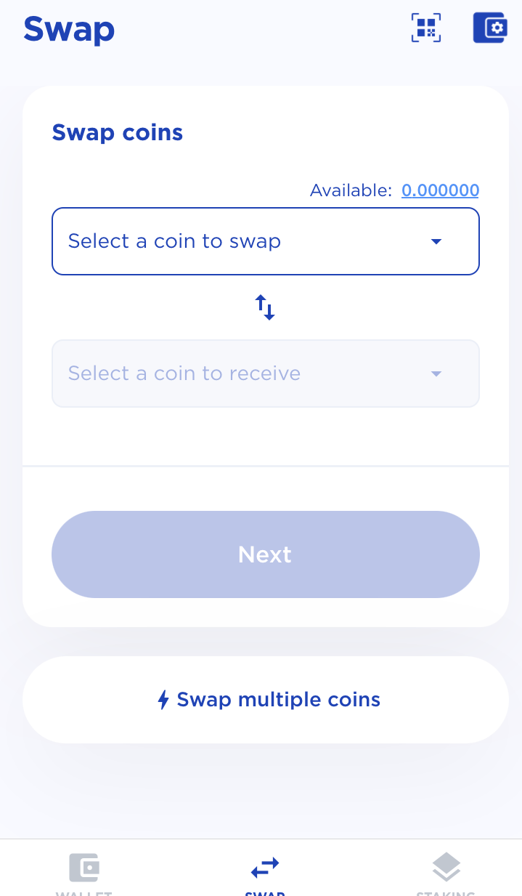In the first dropdown, select a coin and enter the value you want to swap.
In the second dropdown, select a coin to receive.
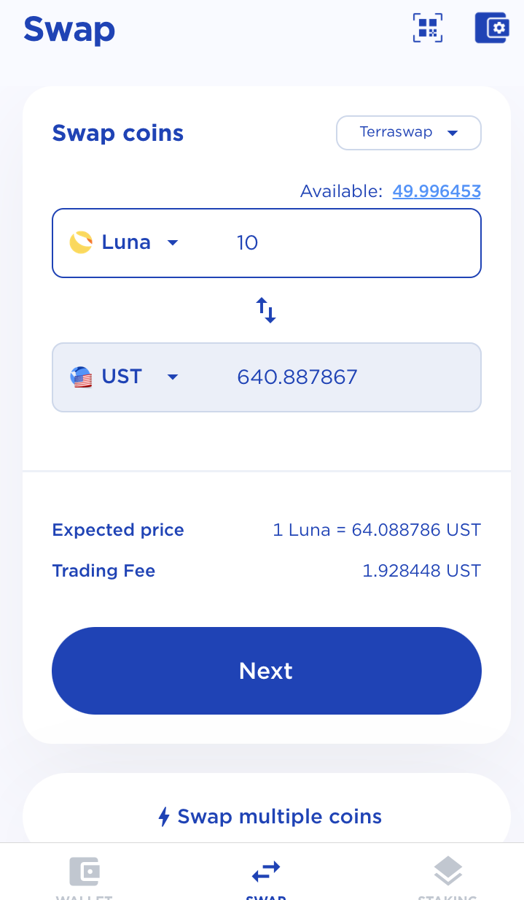Tap Next.
Select the coin you want to pay fees in.
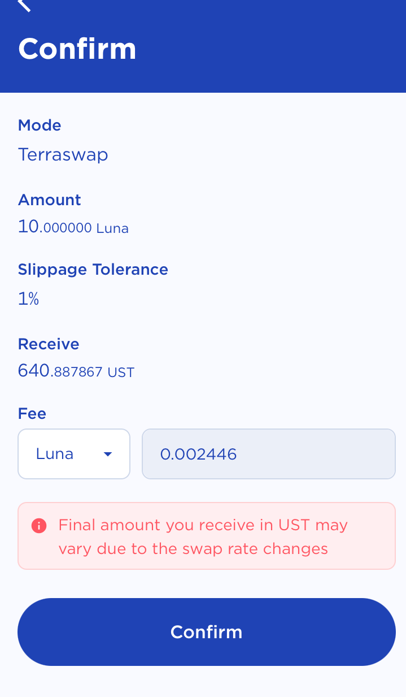Confirm your transaction amounts and tap Confirm.
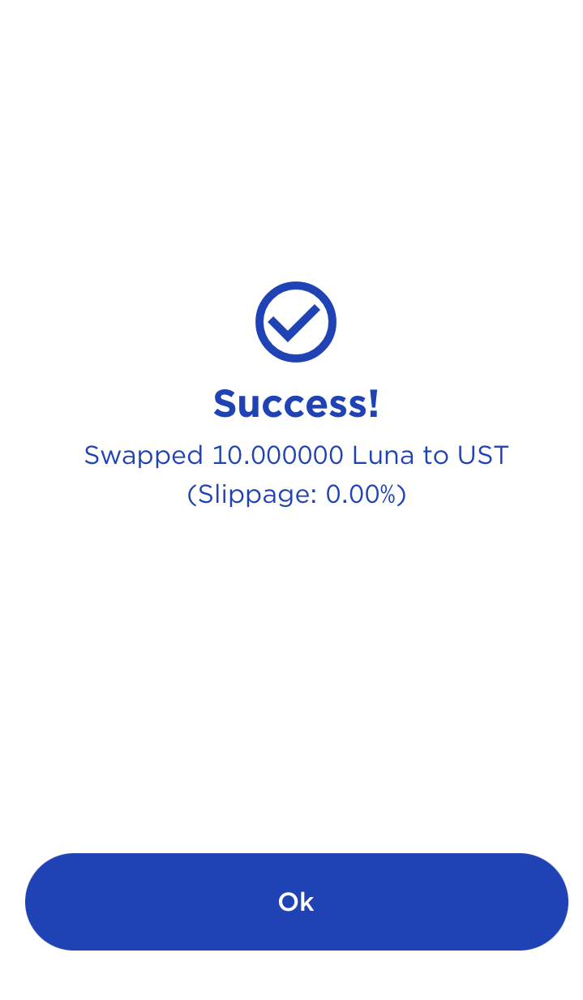
Congratulations, you’ve just swapped coins!
Send tokens#
Open the Terra Station app extension and connect to your wallet.
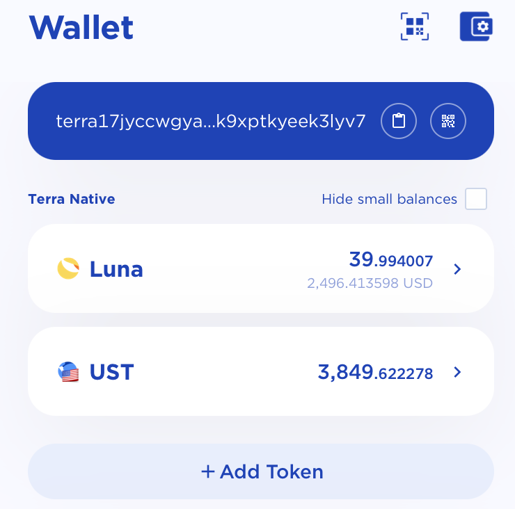Tap on the token in your available balance that you want to send.
Enter the address of the wallet you want to send tokens to.
Enter the amount you want to send. You can also add a memo to specify what the transaction is for.
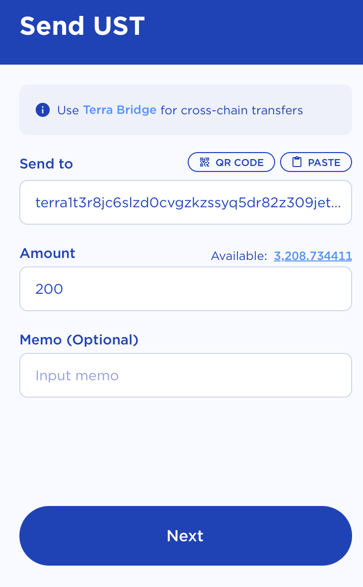Tap Next.
Verify the transaction amounts and specify which token you want to pay fees in. Remember to always leave enough tokens in your account for other transactions.
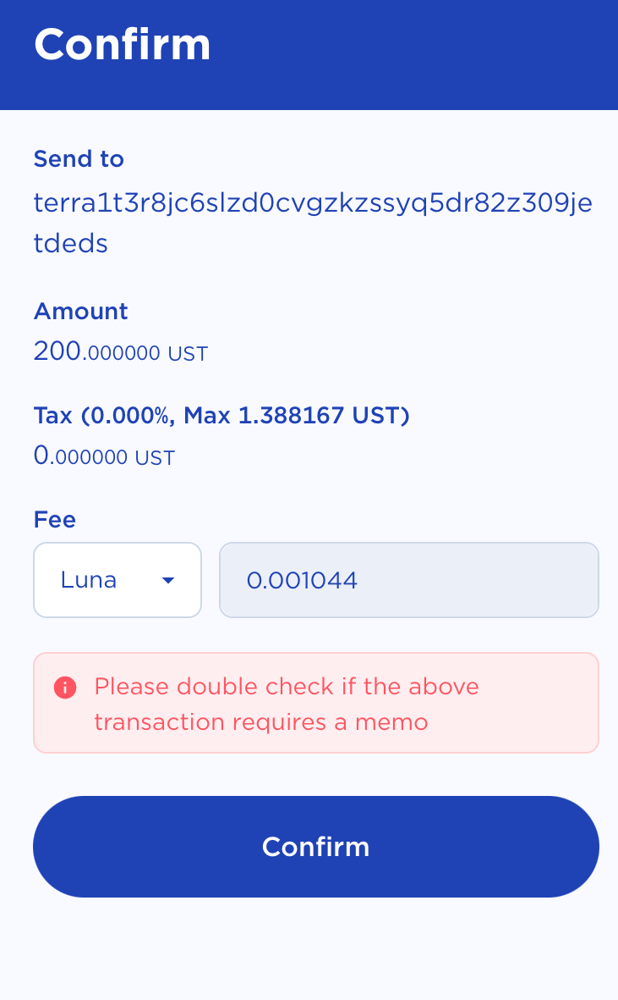Keep coins for fees
Always keep some coins to pay fees with. Never spend your entire wallet amount. Without money for fees, you can’t make any transactions.
Enter your password and tap Confirm. Wait for the transaction to process. This generally takes a few seconds.
Stake Luna#
Open the Terra Station app extension and connect to your wallet. Make sure you have Luna in your wallet to stake.
Tap Staking.
Browse the list and tap on the validator you would like to stake to.
Tap Delegate
Enter the amount of Luna you want to delegate. Tap Next.
Confirm the amount and select the coin you want to pay fees in.
Keep coins for fees
Always keep some coins to pay fees with. Never stake your entire wallet amount. Without money for fees, you can’t make any transactions.
Tap Confirm and wait for your transaction to process.
Your Luna is now staked to a validator.
Withdraw staking rewards#
Rewards start accruing the moment you stake Luna. Monitor your rewards in the staking section of Terra Station. Once you have sufficient rewards, follow these steps to withdraw them:
Open the Terra Station app. Connect to a wallet and tap Staking.
To claim all rewards, tap Withdraw all rewards at the top of the staking page.
Review the amounts and specify which coin you want to pay fees in.
Enter your password and tap Confirm.
Congratulations, you’ve just withdrawn your staking rewards!
Connect to a dApp#
Open the Terra Station app and connect to your wallet.
In your browser, navigate to the dApp of your choice. This tutorial will use the Anchor protocol WebApp. Most dApps use a similar process, though others may vary.
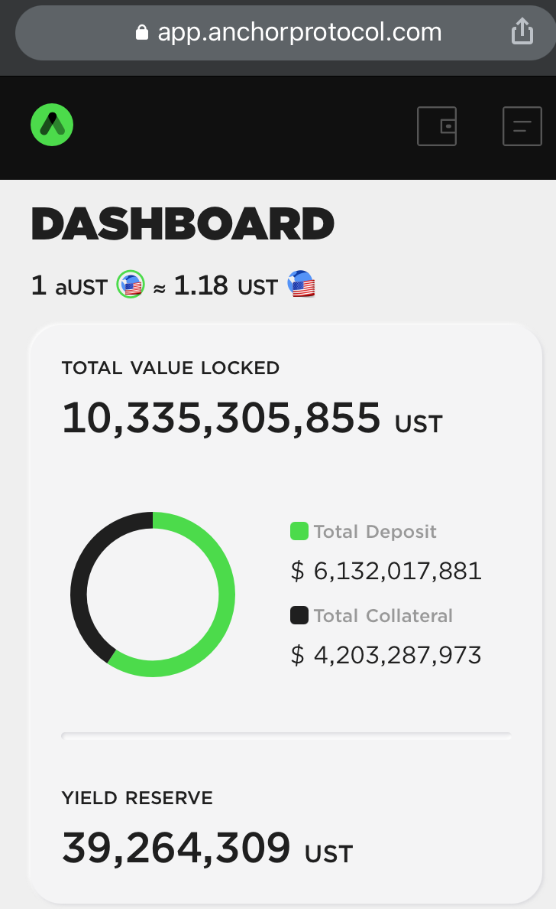Tap the wallet icon at the top of the page.
Wallet connect will open your Terra Station app.
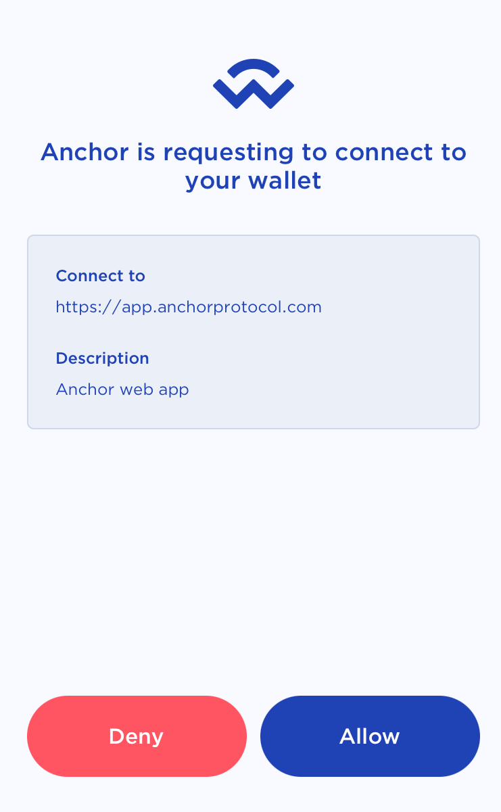When prompted, tap Allow.
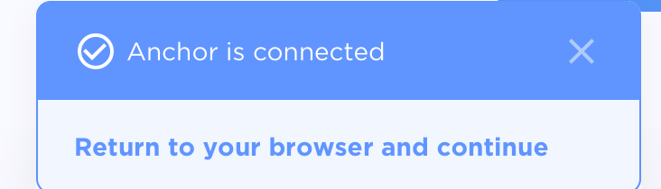
You can now make transactions on different dApps in the Terra ecosystem from your mobile device.
Next steps#
To use Terra Station on your computer, visit the Terra Station desktop tutorial. To learn how to use other Station features, visit the Station guides.